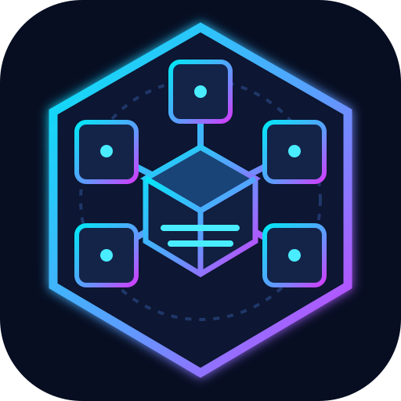
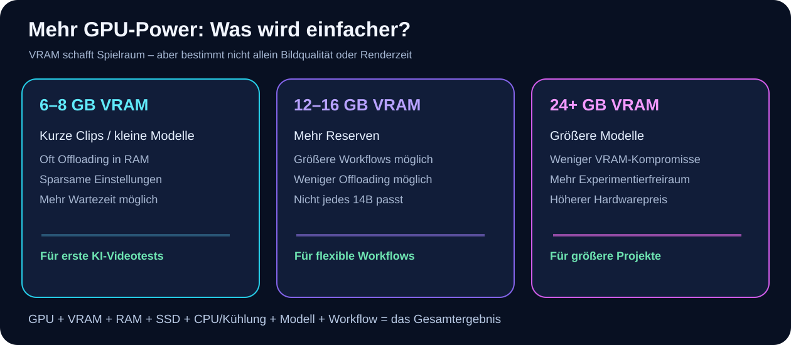
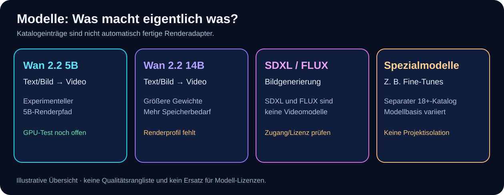

▷
Sender
Projekte, Shots, Regie, Queue und Renderstationen koordinieren.
Projekte · Queue · Stationen
RenderFarmSTUDIOGitHub ↗EXPERIMENTAL ALPHA 0.4 · OPEN DEVELOPMENT
Plane KI-Videos, verwalte Jobs und nutze eigene GPUs – auf Windows, Linux oder macOS. Mit ComfyUI, Modellkatalog, Hardware-Check und gemeinsamer Farm-Warteschlange.
Experimentelle Entwicklungsfassung – reale GPU-Videogenerierung noch nicht ausreichend validiert.
ROLLEN & WORKFLOWS
Nur die Funktionen, die du gerade brauchst. Du kannst deine Rolle später ändern.
Projekte, Shots, Regie, Queue und Renderstationen koordinieren.
Projekte · Queue · StationenLokale GPU und Modelle prüfen, Jobs empfangen und selbst rendern.
Hardware · ComfyUI · JobsSender und Worker kombiniert auf einem einzelnen Rechner.
Ein Rechner · Ein StudioHARDWARE FÜR EINSTEIGER
Entscheidend sind GPU, VRAM, RAM, SSD, ComfyUI, Modell und Workflow. Klicke eine VRAM-Klasse an.
Kürzere Clips und sparsame Modelle als Einstieg. RAM-Offloading kann zu längeren Wartezeiten führen. Echte Kompatibilität bleibt workflowabhängig.
Illustrativer Vergleich, keine gemessenen Benchmark-Werte.
MODELLHUB & COMFYUI
Ein Modell im Katalog heißt nicht, dass sein Renderadapter bereits produktionsreif ist.
Text/Bild zu Video. Erster Testpfad für GPU-Videogenerierung; echten Praxistest noch nachholen.
Größere Video-Checkpoints. Download-Katalog vorhanden, Renderprofil noch nicht freigegeben.
Modellgewichte, Lizenzen und Zugangsvoraussetzungen unterscheiden sich. 🔒 kann Zugang statt Kauf bedeuten.
Eigene Katalogkategorie. Die vollständige technische Trennung von Projekttrainingsdaten ist noch geplant.

ENTWICKLUNGSSTAND
Rollenauswahl, lokale Hardware-Erkennung, Queue, Worker-Basis und Modellkatalog.
ComfyUI, Wan 2.2 5B und echter Videoexport müssen auf Hardware bestätigt werden.
Native Installer, sichere Updatefreigaben, Projektgedächtnis und vollständige Regiewerkzeuge.
COMMUNITY
Du musst kein Profi sein. GPU-Tests, Linux-Erfahrungen, bessere Anleitungen, Installationsfehler und UX-Ideen helfen genauso wie Code.
Keine privaten Bilder, API-Schlüssel, Netzwerkadressen oder Modellgewichte ohne Lizenz posten.
Entwicklung: Dampfrad Labs · ☕ Freiwillig unterstützen